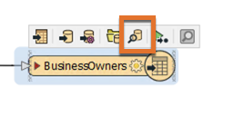
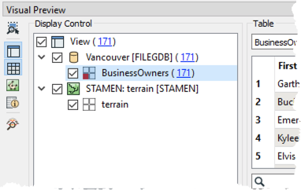
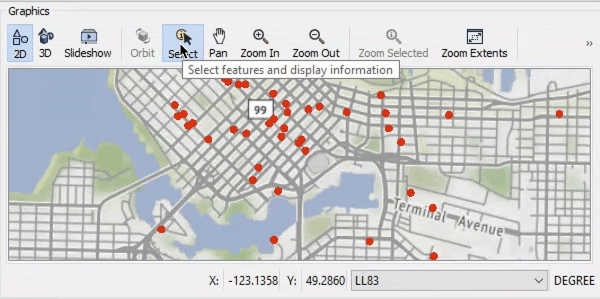

After completing this unit, you’ll be able to:
An important step in a data transformation process is data inspection. It is important to inspect the output dataset to ensure that the process was successful.
Continuing with his workspace, Sven opens the BusinessOwners written data in Visual Preview by selecting it and then clicking View Written Data.

Now that the BusinessOwners feature class (a geodatabase feature class is the equivalent of an FME feature type) in the Vancouver.gdb geodatabase is loaded into Visual Preview, Sven uses the Visual Preview toolbar to control the display. The Visual Preview will display the geometry of features in the Graphics View and the attributes in the Table View.
By default, Visual Preview will display whichever object (feature type or transformer) is selected on the canvas automatically. This means that if Sven selects another object on the canvas, Visual Preview will display that data. Sven doesn't want that to happen because he'll lose the view of the BusinessOwners feature type, so he clicks the Toggle Automatic Inspect on Selection button on the left side of Visual Preview to turn it off.
Sven wants to change the color and size of the points shown in the Graphics View to make the points easier to see against the background map. He clicks the Display Control button to open Display Control, which lets him see a list of the layers being inspected. Sven unchecks the box next to STAMEN to turn off the background map for now; this will allow the points to be seen more clearly. Clicking on the grid icon next to BusinessOwners opens the Geometry Styles dialog. Here Sven can change the display symbology and color of the points. Sven selects the color red, and increases the point size to 8, then turns the background map back on.

To allow more space for the Graphics View, Sven toggles off Display Control and Table View.

Map tiles by Stamen Design, under CC BY 3.0. Data by OpenStreetMap, under CC BY SA.
Sven clicks on Zoom Extents to see all of the data points.

Map tiles by Stamen Design, under CC BY 3.0. Data by OpenStreetMap, under CC BY SA.
Use Pan and Zoom to find the northernmost public art installation. Use Select to select it.
Use the Table View or Feature Information to take note of the title of the installation.
Map tiles by Stamen Design, under CC BY 3.0. Data by OpenStreetMap, under CC BY SA.